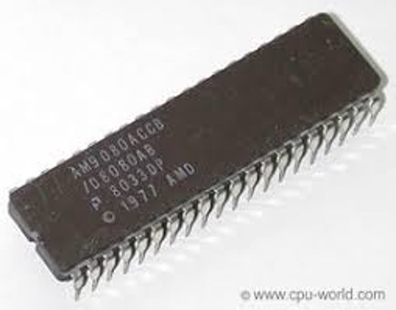
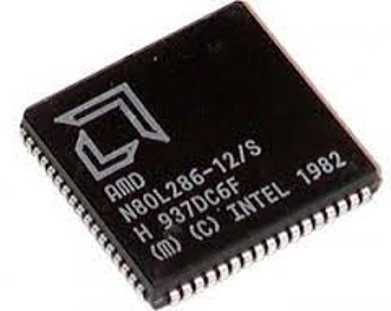
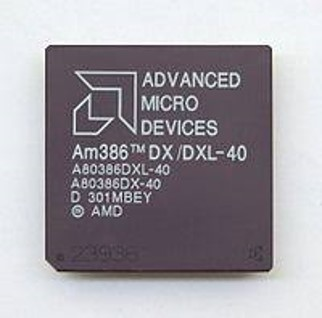
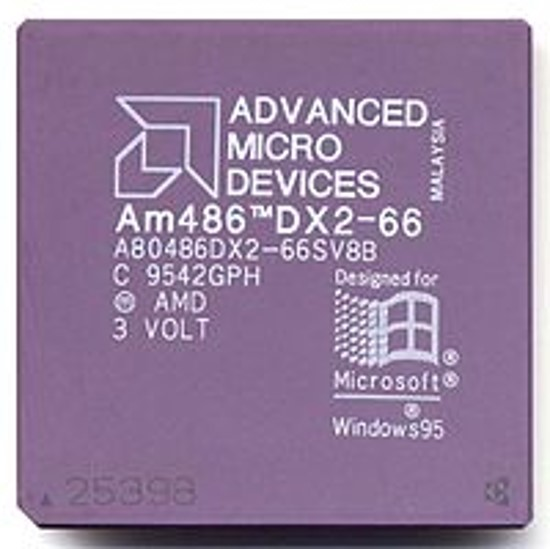
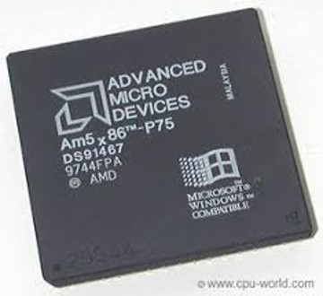
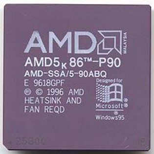
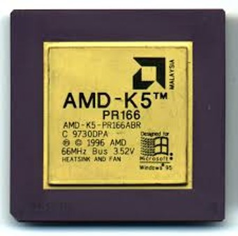
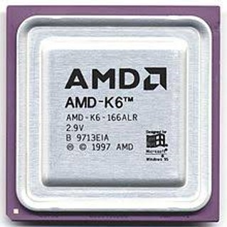
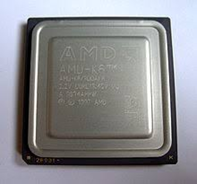
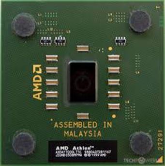

| Modelo | Frecuencia | Caché L2 | TDP | Tecnología | Referencia |
|---|---|---|---|---|---|
| Athlon 64 X2 3800+ | 2000 MHz | 512 + 512 KiB | 89 W | 90 nm | ADA3800DAA5BV |
| Athlon 64 X2 4200+ | 2200Mhz | 512 + 512 KiB | 89 W | 90 nm | ADA4200DAA5BV |
| Athlon 64 X2 4600+ | 2400 MHz | 512 + 512 KiB | 110 W | 90 nm | ADA4600DAA5BV |
| Athlon 64 X2 5000+ | 2600 MHz | 512 + 512 KiB | 110 W | 90 nm | ADA5000DAA5BV |
| Número de modelo | Frecuencia | Caché L2 | Ancho FPU | HT | Multiplicador 1 | TOP | Fecha de lanzamiento |
|---|---|---|---|---|---|---|---|
| Turion 11 P520 | 2,3 GHz | 2 X 1MB | 128 bits | 1,8 GHz | 11,5 X | 25 W | 12 de mayo de 2010 |
| Turion 11 P540 | 2,4 GHz | 2 X 1MB | 128 bits | 1,8 GHz | 12 X | 25 W | 4 de octubre de 2010 |
| Turion 11 P560 | 2,5 GHz | 2 X 1MB | 128 bits | 1,8 GHz | 12,5 X | 25 W | 19 de octubre de 2010 |
| Turion 11 N530 | 2,5 GHz | 2 X 1MB | 128 bits | 1,8 GHz | 12,5 X | 35 W | 12 de mayo de 2010 |
| Turion 11 N550 | 2,6 GHz | 2 X 1MB | 128 bits | 1,8 GHz | 13 X | 35 W | 4 de octubre de 2010 |
| Número de modelo | Frecuencia | Caché L2 total | Caché L3 | Paquete | Potencia de diseño térmico | Tecnología CMOS |
|---|---|---|---|---|---|---|
| 1100T* | 3.3 GHz | 3MB | 6MB | socket AM3 | 125W | 45nm SOI |
| 1090T* | 3.2 GHz | 3MB | 6MB | socket AM3 | 125W | 45nm SOI |
| 1075T | 3.0 GHz | 3MB | 6MB | socket AM3 | 125W | 45nm SOI |
| 1065T | 2.9 GHz | 3MB | 6MB | socket AM3 | 95W | 45nm SOI |
| 1055T | 2.8 GHz | 3MB | 6MB | socket AM3 | 125W | 45nm SOI |
| 1045T | 2.7 GHz | 3MB | 6MB | socket AM3 | 95W | 45nm SOI |
| Procesador AMD Phenom™ II X4 | ||||||
| Número de modelo | Frecuencia | Caché L2 total | Caché L3 | Paquete | Potencia de diseño térmico | Tecnología CMOS |
| 980* | 3.7 GHz | 2MB | 6MB | socket AM3 | 125W | 45nm SOI |
| 975* | 3.6 GHz | 2MB | 6MB | socket AM3 | 125W | 45nm SOI |
| 970* | 3.5 GHz | 2MB | 6MB | socket AM3 | 125W | 45nm SOI |
| 965* | 3.4 GHz | 2MB | 6MB | socket AM3 | 125W | 45nm SOI |
| 955* | 3.2 GHz | 2MB | 6MB | socket AM3 | 125W | 45nm SOI |
| 850 | 2.8 GHz | 2MB | 6MB | socket AM3 | 95W | 45nm SOI |
| Número de modelo | Frecuencia | Tecnología CMOS | Caché L2 dedicada total | Paquete | Potencia de diseño térmico |
|---|---|---|---|---|---|
| 651 | 3.0 GHz | 32nm SOI | 4MB | socket FM1 | 100W |
| 645 | 3.1 GHz | 45nm SOI | 2MB | socket AM3 | 95W |
| 641 | 2.8 GHz | 32nm SOI | 4MB | socket FM1 | 100W |
| 640 | 3.0 GHz | 45nm SOI | 2MB | socket AM3 | 95W |
| 638 | 2.7 GHz | 32nm SOI | 4MB | socket FM1 | 65W |
| 631 | 2.6 GHz | 32nm SOI | 4MB | socket FM1 | 100W |
| Procesador AMD Athlon™ II X4 Quad-Core Energy Efficient | |||||
| Número de modelo | Frecuencia | Tecnología CMOS | Caché L2 dedicada total | Paquete | Potencia de diseño térmico |
| 620e | 2.6 GHz | 45nm SOI | 2MB | socket AM3 | 45W |
| 615e | 2.5 GHz | 45nm SOI | 2MB | socket AM3 | 45W |
| Procesador AMD Athlon™ II X3 Triple-Core | |||||
| Número de modelo | Frecuencia | Tecnología CMOS | Caché L2 dedicada total | Paquete | Potencia de diseño térmico |
| 460 | 3.4 GHz | 45nm SOI | 1.5MB | socket AM3 | 95W |
| 455 | 3.3 GHz | 45nm SOI | 1.5MB | socket AM3 | 95W |
| 450 | 3.2 GHz | 45nm SOI | 1.5MB | socket AM3 | 95W |
| Procesador AMD Athlon™ II X3 Triple-Core Energy Efficient | ||||||
|---|---|---|---|---|---|---|
| Número de modelo | Frecuencia | Tecnología CMOS | Caché L2 dedicada total | Paquete | Potencia de diseño térmico | |
| 425e | 2.7 GHz | 45nm SOI | 1.5MB | socket AM3 | 45W | |
| 420e | 2.6 GHz | 45nm SOI | 1.5MB | socket AM3 | 45W | |
| Procesador AMD Athlon™ II X2 Dual-Core | ||||||
| Número de modelo | Frecuencia | Tecnología CMOS | Caché L2 dedicada total | Paquete | Potencia de diseño térmico | |
| 270 | 3.4 GHz | 45nm SOI | 2MB | socket AM3 | 65W | |
| 265 | 3.3 GHz | 45nm SOI | 2MB | socket AM3 | 65W | |
| 260 | 3.2 GHz | 45nm SOI | 2MB | socket AM3 | 65W | |
| 255 | 3.1 GHz | 45nm SOI | 2MB | socket AM3 | 65W | |
| 250 | 3.0 GHz | 45nm SOI | 2MB | socket AM3 | 65W | |
| 240 | 2.8 GHz | 45nm SOI | 2MB | socket AM3 | 65W | |
| Procesador AMD Athlon™ II X2 Dual-Core Energy Efficient | ||||||
| Número de modelo | Frecuencia | Tecnología CMOS | Caché L2 dedicada total | Paquete | Potencia de diseño térmico | |
| 250e | 3.0GHz | 45nm SOI | 2MB | socket AM3 | 45W | |
| 245e | 2.9GHz | 45nm SOI | 2MB | socket AM3 | 45W |
| Modelo | A10-5800K | A10-5700 | A8-5600K | A8-5500 | A6-5400 | A4-5300 |
|---|---|---|---|---|---|---|
| Núcleos | 4 | 4 | 4 | 4 | 2 | 2 |
| Frecuencia | 3,8 GHz | 3,4 GHz | 3,6 GHz | 3,2 GHz | - | - |
| Turbo CPU | 4,2 GHz | 4,0 GHz | 3,9 GHz | 3,7 GHz | - | - |
| Cache L2 | 4MB | 4MB | 4MB | 4MB | 1MB | 1MB |
| Modelo GPU | HD 7660D | - | HD 7560D | - | - | - |
| Radeon Stream Cores | 384 | 384 | 256 | 256 | 192 | 128 |
| Frecuencia GPU | 800 MHz | 760 MHz | 760 MHz | 760 MHz | - | - |
| Memoria RAM | DDR3-1866 | DDR3-1866 | DDR3-1866 | DDR3-1866 | DDR3-1866 | DDR3-1600 |
| TDP | 100W | 65W | 100W | 65W | 65W | 65W |
| Socket | FM2 | FM2 | FM2 | FM2 | FM2 | FM2 |
| Modelo | AMD FX-8350 | AMD FX-8320 | AMD FX-6300 | AMD FX-4300 |
|---|---|---|---|---|
| Núcleos | 8 | 8 | 6 | 4 |
| Frec. Base (GHz.) | 4 | 3.5 | 3.5 | 3.8 |
| Frec. Turbo (GHz.) | 4.2 | 4 | 4.1 | 4 |
| Caché L2 (MB) | 1 | 1 | 1 | 1 |
| Caché L3 (MB) | 8 | 8 | 8 | 4 |